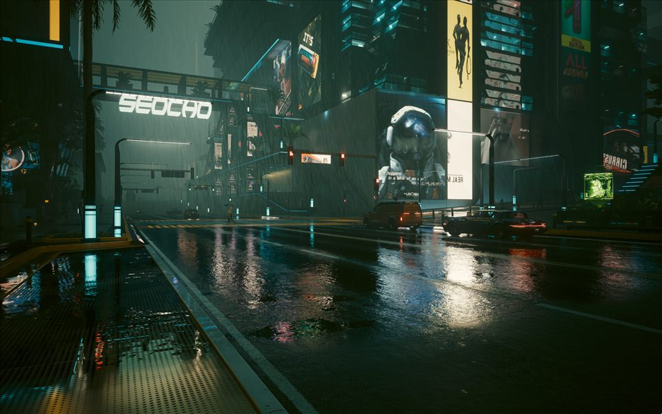
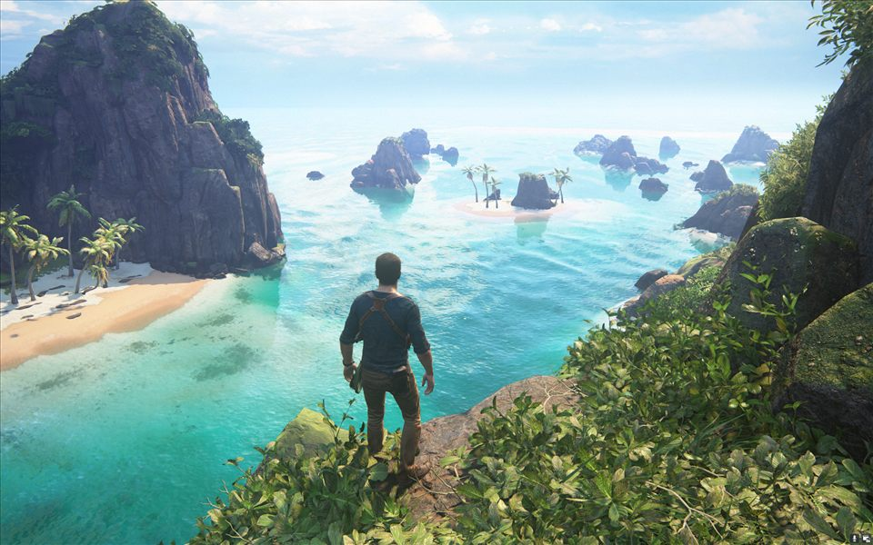
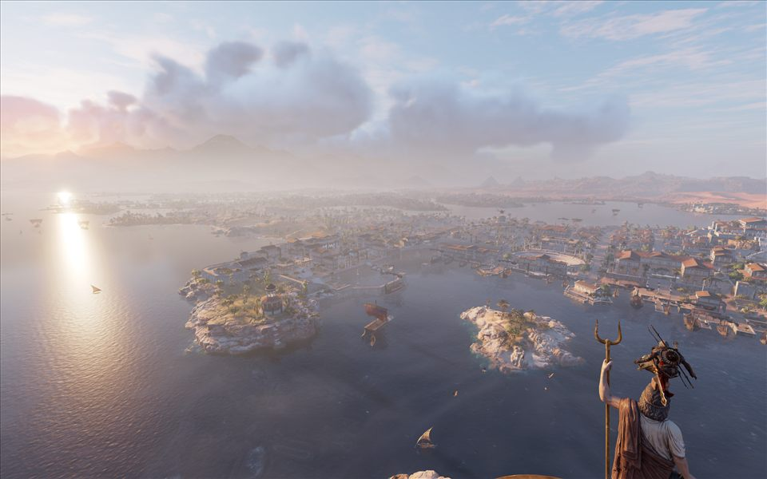
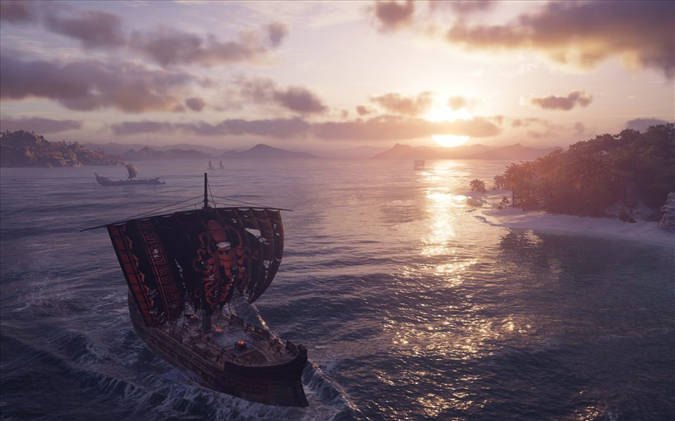
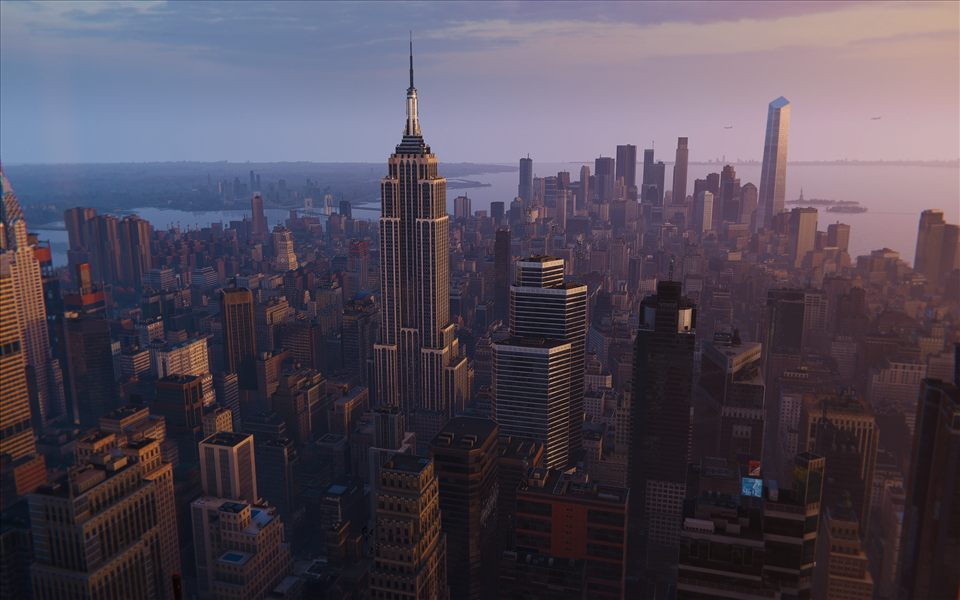
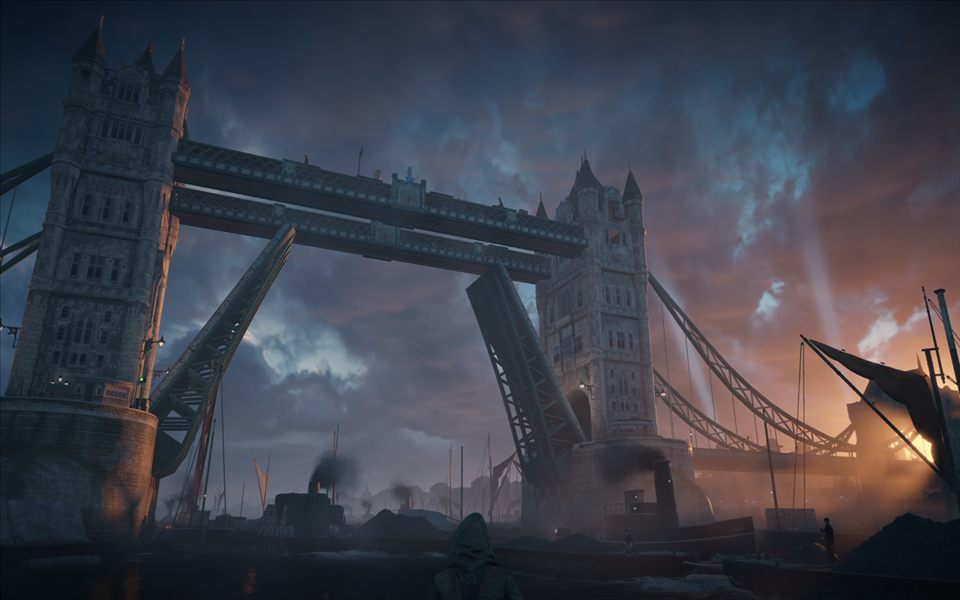

01 The catalogue
Every world has a different light.
Browse the places in the collection. Each page gathers photographs from one game world.
15 worlds / 176 photographs
 01 / The fading WestRed Dead Redemption 2View the frames ↗
01 / The fading WestRed Dead Redemption 2View the frames ↗

02 / Night CityCyberpunk 2077View the frames ↗
03 / The pirate trailUncharted 4: A Thief’s EndView the frames ↗ 04 / Revolutionary ParisAssassin’s Creed UnityView the frames ↗
04 / Revolutionary ParisAssassin’s Creed UnityView the frames ↗

05 / Ancient EgyptAssassin’s Creed OriginsView the frames ↗
06 / Ancient GreeceAssassin’s Creed OdysseyView the frames ↗
07 / New YorkMarvel’s Spider-Man RemasteredView the frames ↗ 08 / Abbasid BaghdadAssassin’s Creed MirageView the frames ↗
08 / Abbasid BaghdadAssassin’s Creed MirageView the frames ↗

09 / Victorian LondonAssassin’s Creed SyndicateView the frames ↗ 10 / Tsushima IslandGhost of TsushimaView the frames ↗ 11 / Gotham CityBatman: Arkham KnightView the frames ↗
11 / Gotham CityBatman: Arkham KnightView the frames ↗
 12 / New YorkMarvel’s Spider-Man: Miles MoralesView the frames ↗
12 / New YorkMarvel’s Spider-Man: Miles MoralesView the frames ↗
 13 / Across post-pandemic AmericaThe Last of Us Part IView the frames ↗
13 / Across post-pandemic AmericaThe Last of Us Part IView the frames ↗
 14 / A long way from JacksonThe Last of Us Part IIView the frames ↗
14 / A long way from JacksonThe Last of Us Part IIView the frames ↗
 15 / Los Santos & Blaine CountyGTA 5 & OnlineView the frames ↗
15 / Los Santos & Blaine CountyGTA 5 & OnlineView the frames ↗